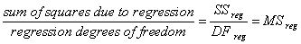
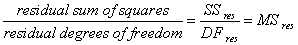
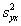
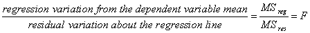

Analysis of Variance (ANOVA) Table
The ANOVA (analysis of variance) table lists the ANOVA statistics for the regression and the corresponding F value.
DF (Degrees of Freedom). Degrees of freedom represent the number of observations and variables in the regression equation.
- The regression degrees of freedom is a measure of the number of independent variables in the regression equation (always 1 for simple linear regression)
- The residual degrees of freedom is a measure of the number of observations less the number of terms in the equation
- The total degrees of freedom is a measure of total observations
SS (Sum of Squares). The sum of squares are measures of variability of the dependent variable.
- The sum of squares due to regression (SSreg ) measures the difference of the regression line from the mean of the dependent variable
- The residual sum of squares (SSres ) is a measure of the size of the residuals, which are the differences between the observed values of the dependent variable and the values predicted by regression model
- The total sum of squares (SStot ) is a measure of the overall variability of the dependent variable about its mean value
MS (Mean Square). The mean square provides two estimates of the population variances. Comparing these variance estimates is the basis of analysis of variance.


The residual mean square is also equal to .

If F is a large number, you can conclude that the independent variable contributes to the prediction of the dependent variable (for example, the slope of the line is different from zero, and the "unexplained variability" is smaller than what is expected from random sampling variability). If the F ratio is around 1, you can conclude that there is no association between the variables (for example, the data is consistent with the null hypothesis that all the samples are just randomly distributed about the population mean, regardless of the value of the independent variable).
P Value. The P value is the probability of being wrong in concluding that there is an association between the dependent and independent variables (for example, the probability of falsely rejecting the null hypothesis, or committing a Type I error, based on F). The smaller the P value, the greater the probability that there is an association.
Traditionally, you can conclude that the independent variable can be used to predict the dependent variable when P < 0.05.